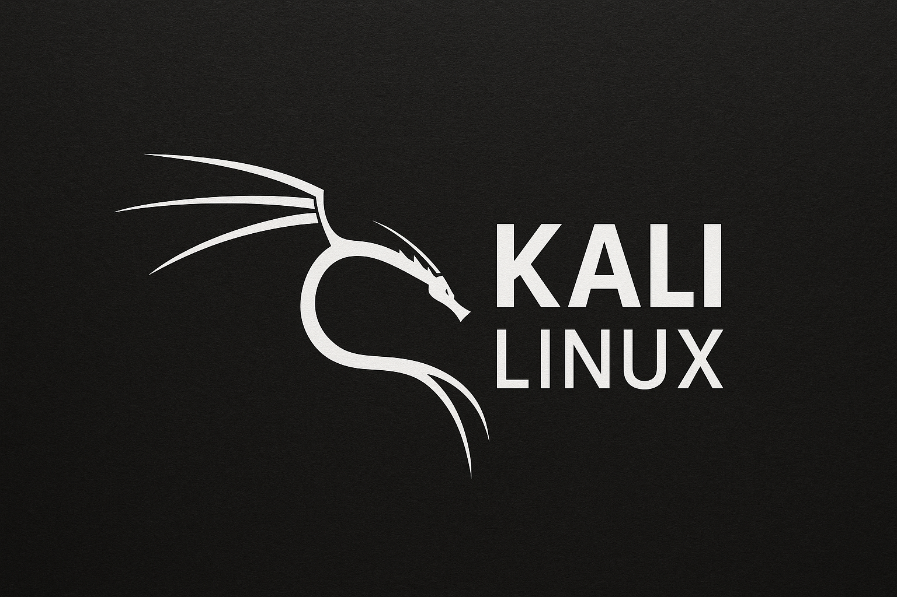

Página destinada a mostrar um pouco sobre linux.
O Linux é um sistema operacional de código aberto e gratuito, baseado no Unix, que serve como o "cérebro" de computadores e diversos dispositivos eletrônicos.
Ubuntu é um ótimo sistema operacional, principalmente para quem deseja começar a usar o Linux, sendo seu primeiro contato com Linux.

O Kali Linux é um sistema operacional especializado, principalmente para quem deseja começar na área de cibersegurança, sendo o primeiro contato ideal com ferramentas de hacking e testes de invasão.
Os Mascotes do Linux Em Conflito.
| Sim | É muito bom | Use |
|---|---|---|
| Pq? | É simples | Só baixar |